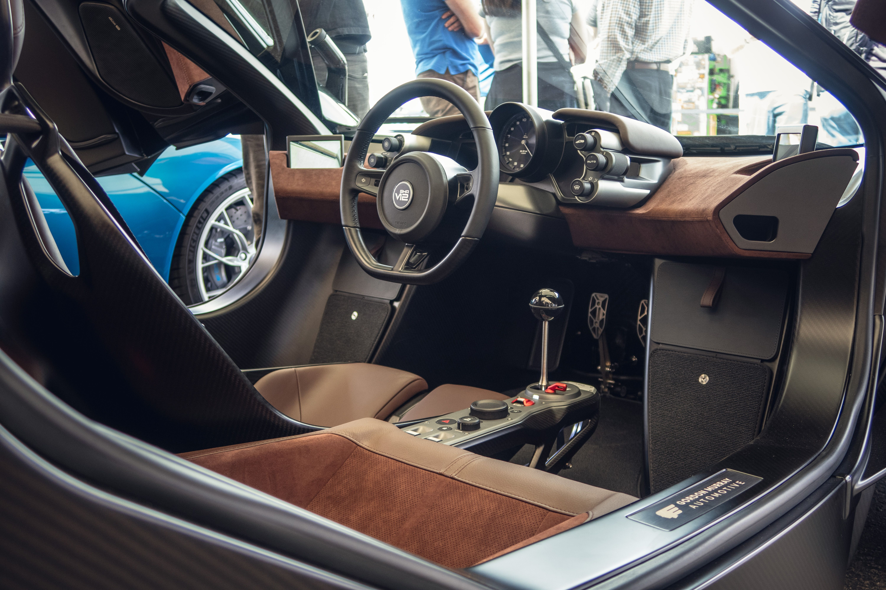
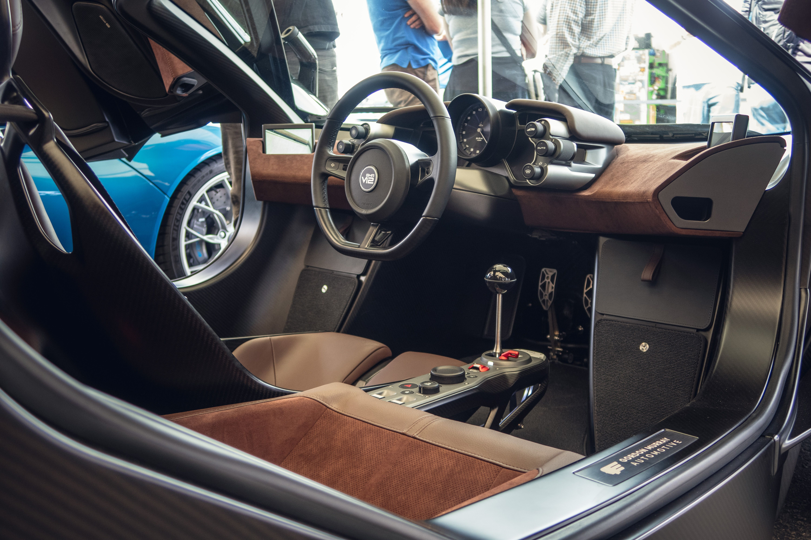

9. GMA T.50
Number 9 brings us to the GMA (Gordon Murray Automotive) T.50. This car pays homage to one of my favourite vehicles of all time being the Mclaren F1! The T.50 is a 2023 built sports car sporting a brand new V12 engine producing 654 horsepower with 467 NM of torque. Despite how it may look, the T.50 is one of the lightest in its class weighing at 987kg giving an extremely good power to weight ratio of 672 hp per tonne. One of the most noticeable features of this vehicle is the huge fan at the rear powered by a 48 volt electrical motor. This motor improves ground effect by sucking air under the car to provide additional downforce! This beautiful vehicle has 100 units with 25 track units making this a low number icon respecting the early F1. This car is a light, delicate air handling menace travelling through the roads as an arrow soars over the battlefield landing it a beautiful spot at number 9.
0-60mph: 2.8s
Top Speed: 226mph
 
